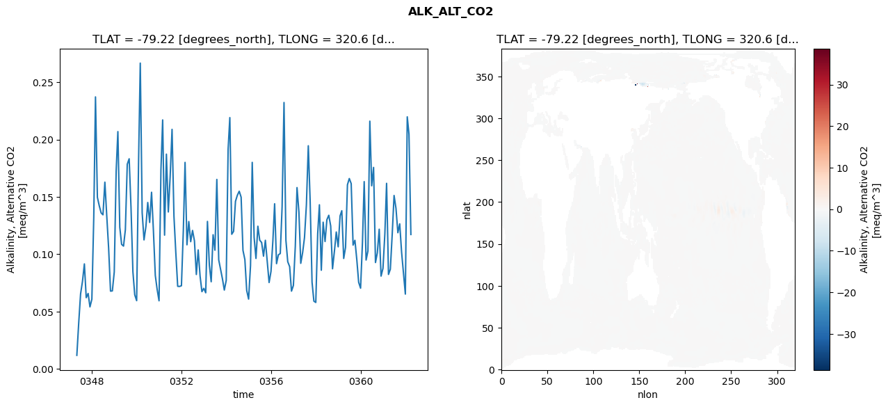
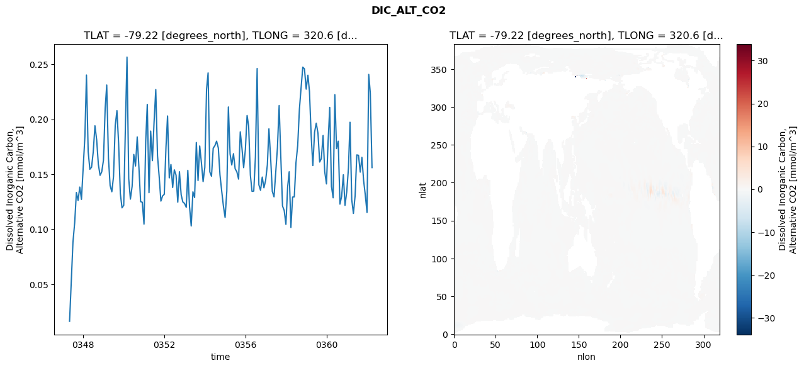
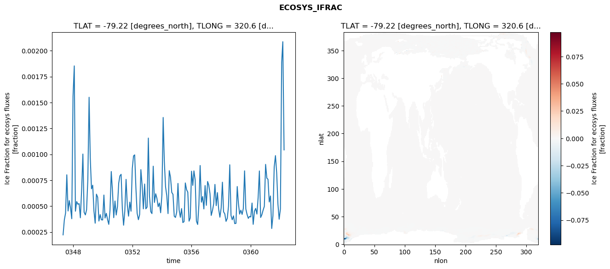
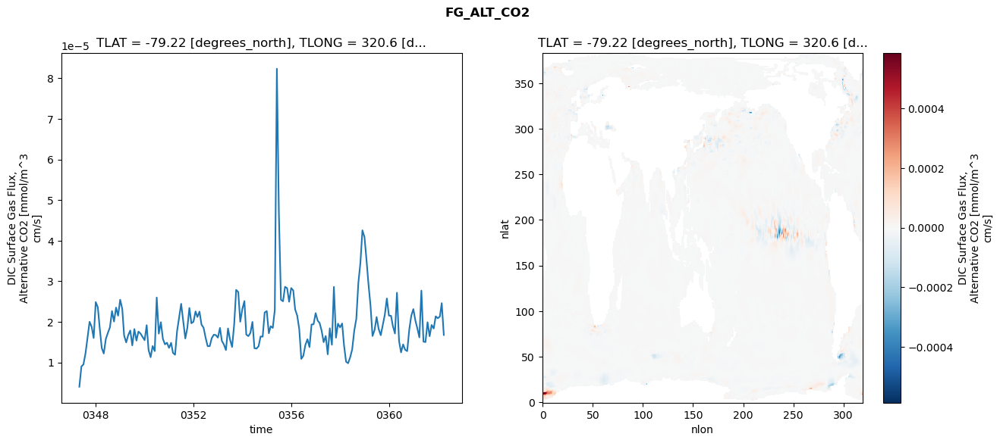

glb-dor_North_Atlantic_basin_038_1999-04-01_00153#
Simulation details#
Case: smyle.cdr-atlas-v0.glb-dor_North_Atlantic_basin_038_1999-04-01_00153.001
Basin: North_Atlantic_basin
Polygon: 38.0
Start date: 1999-04
Show code cell source Hide code cell source
import xarray as xr
import matplotlib.pyplot as plt
Show code cell source Hide code cell source
zarr_store = "/path/to/zarr/store"
# Parameters
zarr_store = "/global/cfs/projectdirs/m4746/Projects/Ocean-CDR-Atlas-v0/data/validation/smyle.cdr-atlas-v0.glb-dor_North_Atlantic_basin_038_1999-04-01_00153.001.validation.zarr"
Show code cell source Hide code cell source
%%time
ds_o = xr.open_zarr(zarr_store).compute()
ds_o
CPU times: user 684 ms, sys: 418 ms, total: 1.1 s
Wall time: 1.37 s
<xarray.Dataset> Size: 2MB
Dimensions: (nlat: 384, nlon: 320, time: 180)
Coordinates:
TLAT float64 8B -79.22
TLONG float64 8B 320.6
ULAT float64 8B -78.95
ULONG float64 8B 321.1
* time (time) object 1kB 0347-05-01 00:00:00 ... 0362-04-01 0...
z_t float32 4B 500.0
Dimensions without coordinates: nlat, nlon
Data variables:
ALK_ALT_CO2_diff (nlat, nlon) float32 492kB nan nan nan ... nan nan nan
ALK_ALT_CO2_rmse (time) float64 1kB 0.01184 0.04042 ... 0.2047 0.1172
DIC_ALT_CO2_diff (nlat, nlon) float32 492kB nan nan nan ... nan nan nan
DIC_ALT_CO2_rmse (time) float64 1kB 0.01638 0.05243 ... 0.224 0.1561
ECOSYS_IFRAC_diff (nlat, nlon) float32 492kB nan nan nan ... nan nan nan
ECOSYS_IFRAC_rmse (time) float64 1kB 0.0002224 0.0003665 ... 0.001042
FG_ALT_CO2_diff (nlat, nlon) float32 492kB nan nan nan ... nan nan nan
FG_ALT_CO2_rmse (time) float64 1kB 4.018e-06 9.007e-06 ... 1.677e-05xarray.Dataset
- nlat: 384
- nlon: 320
- time: 180
- TLAT()float64-79.22
- long_name :
- array of t-grid latitudes
- units :
- degrees_north
array(-79.22052261)
- TLONG()float64320.6
- long_name :
- array of t-grid longitudes
- units :
- degrees_east
array(320.56250892)
- ULAT()float64-78.95
- long_name :
- array of u-grid latitudes
- units :
- degrees_north
array(-78.95289509)
- ULONG()float64321.1
- long_name :
- array of u-grid longitudes
- units :
- degrees_east
array(321.12500894)
- time(time)object0347-05-01 00:00:00 ... 0362-04-...
- bounds :
- time_bound
- long_name :
- time
array([cftime.DatetimeNoLeap(347, 5, 1, 0, 0, 0, 0, has_year_zero=True), cftime.DatetimeNoLeap(347, 6, 1, 0, 0, 0, 0, has_year_zero=True), cftime.DatetimeNoLeap(347, 7, 1, 0, 0, 0, 0, has_year_zero=True), cftime.DatetimeNoLeap(347, 8, 1, 0, 0, 0, 0, has_year_zero=True), cftime.DatetimeNoLeap(347, 9, 1, 0, 0, 0, 0, has_year_zero=True), cftime.DatetimeNoLeap(347, 10, 1, 0, 0, 0, 0, has_year_zero=True), cftime.DatetimeNoLeap(347, 11, 1, 0, 0, 0, 0, has_year_zero=True), cftime.DatetimeNoLeap(347, 12, 1, 0, 0, 0, 0, has_year_zero=True), cftime.DatetimeNoLeap(348, 1, 1, 0, 0, 0, 0, has_year_zero=True), cftime.DatetimeNoLeap(348, 2, 1, 0, 0, 0, 0, has_year_zero=True), cftime.DatetimeNoLeap(348, 3, 1, 0, 0, 0, 0, has_year_zero=True), cftime.DatetimeNoLeap(348, 4, 1, 0, 0, 0, 0, has_year_zero=True), cftime.DatetimeNoLeap(348, 5, 1, 0, 0, 0, 0, has_year_zero=True), cftime.DatetimeNoLeap(348, 6, 1, 0, 0, 0, 0, has_year_zero=True), cftime.DatetimeNoLeap(348, 7, 1, 0, 0, 0, 0, has_year_zero=True), cftime.DatetimeNoLeap(348, 8, 1, 0, 0, 0, 0, has_year_zero=True), cftime.DatetimeNoLeap(348, 9, 1, 0, 0, 0, 0, has_year_zero=True), cftime.DatetimeNoLeap(348, 10, 1, 0, 0, 0, 0, has_year_zero=True), cftime.DatetimeNoLeap(348, 11, 1, 0, 0, 0, 0, has_year_zero=True), cftime.DatetimeNoLeap(348, 12, 1, 0, 0, 0, 0, has_year_zero=True), cftime.DatetimeNoLeap(349, 1, 1, 0, 0, 0, 0, has_year_zero=True), cftime.DatetimeNoLeap(349, 2, 1, 0, 0, 0, 0, has_year_zero=True), cftime.DatetimeNoLeap(349, 3, 1, 0, 0, 0, 0, has_year_zero=True), cftime.DatetimeNoLeap(349, 4, 1, 0, 0, 0, 0, has_year_zero=True), cftime.DatetimeNoLeap(349, 5, 1, 0, 0, 0, 0, has_year_zero=True), cftime.DatetimeNoLeap(349, 6, 1, 0, 0, 0, 0, has_year_zero=True), cftime.DatetimeNoLeap(349, 7, 1, 0, 0, 0, 0, has_year_zero=True), cftime.DatetimeNoLeap(349, 8, 1, 0, 0, 0, 0, has_year_zero=True), cftime.DatetimeNoLeap(349, 9, 1, 0, 0, 0, 0, has_year_zero=True), cftime.DatetimeNoLeap(349, 10, 1, 0, 0, 0, 0, has_year_zero=True), cftime.DatetimeNoLeap(349, 11, 1, 0, 0, 0, 0, has_year_zero=True), cftime.DatetimeNoLeap(349, 12, 1, 0, 0, 0, 0, has_year_zero=True), cftime.DatetimeNoLeap(350, 1, 1, 0, 0, 0, 0, has_year_zero=True), cftime.DatetimeNoLeap(350, 2, 1, 0, 0, 0, 0, has_year_zero=True), cftime.DatetimeNoLeap(350, 3, 1, 0, 0, 0, 0, has_year_zero=True), cftime.DatetimeNoLeap(350, 4, 1, 0, 0, 0, 0, has_year_zero=True), cftime.DatetimeNoLeap(350, 5, 1, 0, 0, 0, 0, has_year_zero=True), cftime.DatetimeNoLeap(350, 6, 1, 0, 0, 0, 0, has_year_zero=True), cftime.DatetimeNoLeap(350, 7, 1, 0, 0, 0, 0, has_year_zero=True), cftime.DatetimeNoLeap(350, 8, 1, 0, 0, 0, 0, has_year_zero=True), cftime.DatetimeNoLeap(350, 9, 1, 0, 0, 0, 0, has_year_zero=True), cftime.DatetimeNoLeap(350, 10, 1, 0, 0, 0, 0, has_year_zero=True), cftime.DatetimeNoLeap(350, 11, 1, 0, 0, 0, 0, has_year_zero=True), cftime.DatetimeNoLeap(350, 12, 1, 0, 0, 0, 0, has_year_zero=True), cftime.DatetimeNoLeap(351, 1, 1, 0, 0, 0, 0, has_year_zero=True), cftime.DatetimeNoLeap(351, 2, 1, 0, 0, 0, 0, has_year_zero=True), cftime.DatetimeNoLeap(351, 3, 1, 0, 0, 0, 0, has_year_zero=True), cftime.DatetimeNoLeap(351, 4, 1, 0, 0, 0, 0, has_year_zero=True), cftime.DatetimeNoLeap(351, 5, 1, 0, 0, 0, 0, has_year_zero=True), cftime.DatetimeNoLeap(351, 6, 1, 0, 0, 0, 0, has_year_zero=True), cftime.DatetimeNoLeap(351, 7, 1, 0, 0, 0, 0, has_year_zero=True), cftime.DatetimeNoLeap(351, 8, 1, 0, 0, 0, 0, has_year_zero=True), cftime.DatetimeNoLeap(351, 9, 1, 0, 0, 0, 0, has_year_zero=True), cftime.DatetimeNoLeap(351, 10, 1, 0, 0, 0, 0, has_year_zero=True), cftime.DatetimeNoLeap(351, 11, 1, 0, 0, 0, 0, has_year_zero=True), cftime.DatetimeNoLeap(351, 12, 1, 0, 0, 0, 0, has_year_zero=True), cftime.DatetimeNoLeap(352, 1, 1, 0, 0, 0, 0, has_year_zero=True), cftime.DatetimeNoLeap(352, 2, 1, 0, 0, 0, 0, has_year_zero=True), cftime.DatetimeNoLeap(352, 3, 1, 0, 0, 0, 0, has_year_zero=True), cftime.DatetimeNoLeap(352, 4, 1, 0, 0, 0, 0, has_year_zero=True), cftime.DatetimeNoLeap(352, 5, 1, 0, 0, 0, 0, has_year_zero=True), cftime.DatetimeNoLeap(352, 6, 1, 0, 0, 0, 0, has_year_zero=True), cftime.DatetimeNoLeap(352, 7, 1, 0, 0, 0, 0, has_year_zero=True), cftime.DatetimeNoLeap(352, 8, 1, 0, 0, 0, 0, has_year_zero=True), cftime.DatetimeNoLeap(352, 9, 1, 0, 0, 0, 0, has_year_zero=True), cftime.DatetimeNoLeap(352, 10, 1, 0, 0, 0, 0, has_year_zero=True), cftime.DatetimeNoLeap(352, 11, 1, 0, 0, 0, 0, has_year_zero=True), cftime.DatetimeNoLeap(352, 12, 1, 0, 0, 0, 0, has_year_zero=True), cftime.DatetimeNoLeap(353, 1, 1, 0, 0, 0, 0, has_year_zero=True), cftime.DatetimeNoLeap(353, 2, 1, 0, 0, 0, 0, has_year_zero=True), cftime.DatetimeNoLeap(353, 3, 1, 0, 0, 0, 0, has_year_zero=True), cftime.DatetimeNoLeap(353, 4, 1, 0, 0, 0, 0, has_year_zero=True), cftime.DatetimeNoLeap(353, 5, 1, 0, 0, 0, 0, has_year_zero=True), cftime.DatetimeNoLeap(353, 6, 1, 0, 0, 0, 0, has_year_zero=True), cftime.DatetimeNoLeap(353, 7, 1, 0, 0, 0, 0, has_year_zero=True), cftime.DatetimeNoLeap(353, 8, 1, 0, 0, 0, 0, has_year_zero=True), cftime.DatetimeNoLeap(353, 9, 1, 0, 0, 0, 0, has_year_zero=True), cftime.DatetimeNoLeap(353, 10, 1, 0, 0, 0, 0, has_year_zero=True), cftime.DatetimeNoLeap(353, 11, 1, 0, 0, 0, 0, has_year_zero=True), cftime.DatetimeNoLeap(353, 12, 1, 0, 0, 0, 0, has_year_zero=True), cftime.DatetimeNoLeap(354, 1, 1, 0, 0, 0, 0, has_year_zero=True), cftime.DatetimeNoLeap(354, 2, 1, 0, 0, 0, 0, has_year_zero=True), cftime.DatetimeNoLeap(354, 3, 1, 0, 0, 0, 0, has_year_zero=True), cftime.DatetimeNoLeap(354, 4, 1, 0, 0, 0, 0, has_year_zero=True), cftime.DatetimeNoLeap(354, 5, 1, 0, 0, 0, 0, has_year_zero=True), cftime.DatetimeNoLeap(354, 6, 1, 0, 0, 0, 0, has_year_zero=True), cftime.DatetimeNoLeap(354, 7, 1, 0, 0, 0, 0, has_year_zero=True), cftime.DatetimeNoLeap(354, 8, 1, 0, 0, 0, 0, has_year_zero=True), cftime.DatetimeNoLeap(354, 9, 1, 0, 0, 0, 0, has_year_zero=True), cftime.DatetimeNoLeap(354, 10, 1, 0, 0, 0, 0, has_year_zero=True), cftime.DatetimeNoLeap(354, 11, 1, 0, 0, 0, 0, has_year_zero=True), cftime.DatetimeNoLeap(354, 12, 1, 0, 0, 0, 0, has_year_zero=True), cftime.DatetimeNoLeap(355, 1, 1, 0, 0, 0, 0, has_year_zero=True), cftime.DatetimeNoLeap(355, 2, 1, 0, 0, 0, 0, has_year_zero=True), cftime.DatetimeNoLeap(355, 3, 1, 0, 0, 0, 0, has_year_zero=True), cftime.DatetimeNoLeap(355, 4, 1, 0, 0, 0, 0, has_year_zero=True), cftime.DatetimeNoLeap(355, 5, 1, 0, 0, 0, 0, has_year_zero=True), cftime.DatetimeNoLeap(355, 6, 1, 0, 0, 0, 0, has_year_zero=True), cftime.DatetimeNoLeap(355, 7, 1, 0, 0, 0, 0, has_year_zero=True), cftime.DatetimeNoLeap(355, 8, 1, 0, 0, 0, 0, has_year_zero=True), cftime.DatetimeNoLeap(355, 9, 1, 0, 0, 0, 0, has_year_zero=True), cftime.DatetimeNoLeap(355, 10, 1, 0, 0, 0, 0, has_year_zero=True), cftime.DatetimeNoLeap(355, 11, 1, 0, 0, 0, 0, has_year_zero=True), cftime.DatetimeNoLeap(355, 12, 1, 0, 0, 0, 0, has_year_zero=True), cftime.DatetimeNoLeap(356, 1, 1, 0, 0, 0, 0, has_year_zero=True), cftime.DatetimeNoLeap(356, 2, 1, 0, 0, 0, 0, has_year_zero=True), cftime.DatetimeNoLeap(356, 3, 1, 0, 0, 0, 0, has_year_zero=True), cftime.DatetimeNoLeap(356, 4, 1, 0, 0, 0, 0, has_year_zero=True), cftime.DatetimeNoLeap(356, 5, 1, 0, 0, 0, 0, has_year_zero=True), cftime.DatetimeNoLeap(356, 6, 1, 0, 0, 0, 0, has_year_zero=True), cftime.DatetimeNoLeap(356, 7, 1, 0, 0, 0, 0, has_year_zero=True), cftime.DatetimeNoLeap(356, 8, 1, 0, 0, 0, 0, has_year_zero=True), cftime.DatetimeNoLeap(356, 9, 1, 0, 0, 0, 0, has_year_zero=True), cftime.DatetimeNoLeap(356, 10, 1, 0, 0, 0, 0, has_year_zero=True), cftime.DatetimeNoLeap(356, 11, 1, 0, 0, 0, 0, has_year_zero=True), cftime.DatetimeNoLeap(356, 12, 1, 0, 0, 0, 0, has_year_zero=True), cftime.DatetimeNoLeap(357, 1, 1, 0, 0, 0, 0, has_year_zero=True), cftime.DatetimeNoLeap(357, 2, 1, 0, 0, 0, 0, has_year_zero=True), cftime.DatetimeNoLeap(357, 3, 1, 0, 0, 0, 0, has_year_zero=True), cftime.DatetimeNoLeap(357, 4, 1, 0, 0, 0, 0, has_year_zero=True), cftime.DatetimeNoLeap(357, 5, 1, 0, 0, 0, 0, has_year_zero=True), cftime.DatetimeNoLeap(357, 6, 1, 0, 0, 0, 0, has_year_zero=True), cftime.DatetimeNoLeap(357, 7, 1, 0, 0, 0, 0, has_year_zero=True), cftime.DatetimeNoLeap(357, 8, 1, 0, 0, 0, 0, has_year_zero=True), cftime.DatetimeNoLeap(357, 9, 1, 0, 0, 0, 0, has_year_zero=True), cftime.DatetimeNoLeap(357, 10, 1, 0, 0, 0, 0, has_year_zero=True), cftime.DatetimeNoLeap(357, 11, 1, 0, 0, 0, 0, has_year_zero=True), cftime.DatetimeNoLeap(357, 12, 1, 0, 0, 0, 0, has_year_zero=True), cftime.DatetimeNoLeap(358, 1, 1, 0, 0, 0, 0, has_year_zero=True), cftime.DatetimeNoLeap(358, 2, 1, 0, 0, 0, 0, has_year_zero=True), cftime.DatetimeNoLeap(358, 3, 1, 0, 0, 0, 0, has_year_zero=True), cftime.DatetimeNoLeap(358, 4, 1, 0, 0, 0, 0, has_year_zero=True), cftime.DatetimeNoLeap(358, 5, 1, 0, 0, 0, 0, has_year_zero=True), cftime.DatetimeNoLeap(358, 6, 1, 0, 0, 0, 0, has_year_zero=True), cftime.DatetimeNoLeap(358, 7, 1, 0, 0, 0, 0, has_year_zero=True), cftime.DatetimeNoLeap(358, 8, 1, 0, 0, 0, 0, has_year_zero=True), cftime.DatetimeNoLeap(358, 9, 1, 0, 0, 0, 0, has_year_zero=True), cftime.DatetimeNoLeap(358, 10, 1, 0, 0, 0, 0, has_year_zero=True), cftime.DatetimeNoLeap(358, 11, 1, 0, 0, 0, 0, has_year_zero=True), cftime.DatetimeNoLeap(358, 12, 1, 0, 0, 0, 0, has_year_zero=True), cftime.DatetimeNoLeap(359, 1, 1, 0, 0, 0, 0, has_year_zero=True), cftime.DatetimeNoLeap(359, 2, 1, 0, 0, 0, 0, has_year_zero=True), cftime.DatetimeNoLeap(359, 3, 1, 0, 0, 0, 0, has_year_zero=True), cftime.DatetimeNoLeap(359, 4, 1, 0, 0, 0, 0, has_year_zero=True), cftime.DatetimeNoLeap(359, 5, 1, 0, 0, 0, 0, has_year_zero=True), cftime.DatetimeNoLeap(359, 6, 1, 0, 0, 0, 0, has_year_zero=True), cftime.DatetimeNoLeap(359, 7, 1, 0, 0, 0, 0, has_year_zero=True), cftime.DatetimeNoLeap(359, 8, 1, 0, 0, 0, 0, has_year_zero=True), cftime.DatetimeNoLeap(359, 9, 1, 0, 0, 0, 0, has_year_zero=True), cftime.DatetimeNoLeap(359, 10, 1, 0, 0, 0, 0, has_year_zero=True), cftime.DatetimeNoLeap(359, 11, 1, 0, 0, 0, 0, has_year_zero=True), cftime.DatetimeNoLeap(359, 12, 1, 0, 0, 0, 0, has_year_zero=True), cftime.DatetimeNoLeap(360, 1, 1, 0, 0, 0, 0, has_year_zero=True), cftime.DatetimeNoLeap(360, 2, 1, 0, 0, 0, 0, has_year_zero=True), cftime.DatetimeNoLeap(360, 3, 1, 0, 0, 0, 0, has_year_zero=True), cftime.DatetimeNoLeap(360, 4, 1, 0, 0, 0, 0, has_year_zero=True), cftime.DatetimeNoLeap(360, 5, 1, 0, 0, 0, 0, has_year_zero=True), cftime.DatetimeNoLeap(360, 6, 1, 0, 0, 0, 0, has_year_zero=True), cftime.DatetimeNoLeap(360, 7, 1, 0, 0, 0, 0, has_year_zero=True), cftime.DatetimeNoLeap(360, 8, 1, 0, 0, 0, 0, has_year_zero=True), cftime.DatetimeNoLeap(360, 9, 1, 0, 0, 0, 0, has_year_zero=True), cftime.DatetimeNoLeap(360, 10, 1, 0, 0, 0, 0, has_year_zero=True), cftime.DatetimeNoLeap(360, 11, 1, 0, 0, 0, 0, has_year_zero=True), cftime.DatetimeNoLeap(360, 12, 1, 0, 0, 0, 0, has_year_zero=True), cftime.DatetimeNoLeap(361, 1, 1, 0, 0, 0, 0, has_year_zero=True), cftime.DatetimeNoLeap(361, 2, 1, 0, 0, 0, 0, has_year_zero=True), cftime.DatetimeNoLeap(361, 3, 1, 0, 0, 0, 0, has_year_zero=True), cftime.DatetimeNoLeap(361, 4, 1, 0, 0, 0, 0, has_year_zero=True), cftime.DatetimeNoLeap(361, 5, 1, 0, 0, 0, 0, has_year_zero=True), cftime.DatetimeNoLeap(361, 6, 1, 0, 0, 0, 0, has_year_zero=True), cftime.DatetimeNoLeap(361, 7, 1, 0, 0, 0, 0, has_year_zero=True), cftime.DatetimeNoLeap(361, 8, 1, 0, 0, 0, 0, has_year_zero=True), cftime.DatetimeNoLeap(361, 9, 1, 0, 0, 0, 0, has_year_zero=True), cftime.DatetimeNoLeap(361, 10, 1, 0, 0, 0, 0, has_year_zero=True), cftime.DatetimeNoLeap(361, 11, 1, 0, 0, 0, 0, has_year_zero=True), cftime.DatetimeNoLeap(361, 12, 1, 0, 0, 0, 0, has_year_zero=True), cftime.DatetimeNoLeap(362, 1, 1, 0, 0, 0, 0, has_year_zero=True), cftime.DatetimeNoLeap(362, 2, 1, 0, 0, 0, 0, has_year_zero=True), cftime.DatetimeNoLeap(362, 3, 1, 0, 0, 0, 0, has_year_zero=True), cftime.DatetimeNoLeap(362, 4, 1, 0, 0, 0, 0, has_year_zero=True)], dtype=object) - z_t()float32500.0
- long_name :
- depth from surface to midpoint of layer
- positive :
- down
- units :
- centimeters
- valid_max :
- 537500.0
- valid_min :
- 500.0
array(500., dtype=float32)
- ALK_ALT_CO2_diff(nlat, nlon)float32nan nan nan nan ... nan nan nan nan
- cell_methods :
- time: mean
- grid_loc :
- 3111
- long_name :
- Alkalinity, Alternative CO2
- units :
- meq/m^3
array([[ nan, nan, nan, ..., nan, nan, nan], [ nan, nan, nan, ..., nan, nan, nan], [0.01513672, 0.03051758, 0.04907227, ..., nan, nan, nan], ..., [ nan, nan, nan, ..., nan, nan, nan], [ nan, nan, nan, ..., nan, nan, nan], [ nan, nan, nan, ..., nan, nan, nan]], dtype=float32) - ALK_ALT_CO2_rmse(time)float640.01184 0.04042 ... 0.2047 0.1172
- cell_methods :
- time: mean
- grid_loc :
- 3111
- long_name :
- Alkalinity, Alternative CO2
- units :
- meq/m^3
array([0.01183601, 0.04041599, 0.06536908, 0.07631232, 0.09153547, 0.06210344, 0.06576743, 0.05407737, 0.0608242 , 0.13225811, 0.23714961, 0.14963058, 0.14234189, 0.13603632, 0.13435925, 0.16281462, 0.1330927 , 0.10555947, 0.06780648, 0.06800899, 0.0845528 , 0.17244514, 0.20690643, 0.12355346, 0.10858605, 0.10708723, 0.12130086, 0.17848071, 0.18321808, 0.14077911, 0.08466981, 0.06459354, 0.05951378, 0.17913524, 0.26662665, 0.13609429, 0.1124871 , 0.12416565, 0.14508439, 0.12770175, 0.1540126 , 0.12084821, 0.08153084, 0.06934497, 0.05940152, 0.17355345, 0.21709609, 0.11663429, 0.18724585, 0.13684518, 0.1674682 , 0.20885166, 0.13314012, 0.10178062, 0.07201922, 0.07190641, 0.07252212, 0.12070149, 0.18005847, 0.1082133 , 0.12848781, 0.11093535, 0.12073348, 0.11165738, 0.08231941, 0.10372293, 0.080873 , 0.06736361, 0.07025517, 0.06635433, 0.12858225, 0.09040072, 0.07600222, 0.11696403, 0.10350685, 0.16519887, 0.09500846, 0.08685412, 0.07837213, 0.06873346, 0.07714777, 0.19155582, 0.21910867, 0.11740728, 0.1199193 , 0.14615003, 0.15132711, 0.15491406, 0.1497363 , 0.10338889, 0.09535436, 0.06835818, 0.0609015 , 0.0900607 , 0.18007326, 0.11457601, 0.09632017, 0.12439185, 0.11221343, 0.11021924, 0.09830674, 0.11214173, 0.09336995, 0.07532525, 0.08504984, 0.11206157, 0.14398887, 0.09177398, 0.09942971, 0.1006003 , 0.14141516, 0.23228178, 0.11211429, 0.09341548, 0.08918407, 0.06780473, 0.07273103, 0.10683693, 0.15809043, 0.13681841, 0.09206113, 0.10159658, 0.11453608, 0.14308984, 0.19455347, 0.14655063, 0.07561176, 0.05904394, 0.05795538, 0.11793727, 0.14307782, 0.08603581, 0.12791188, 0.11106992, 0.13010139, 0.13396568, 0.12461565, 0.08728717, 0.10278282, 0.1193598 , 0.10647205, 0.13342095, 0.13792314, 0.09630166, 0.10599564, 0.16054098, 0.16598834, 0.16158136, 0.10792316, 0.11212011, 0.09501068, 0.07550289, 0.07036775, 0.110604 , 0.16329845, 0.09494164, 0.10280488, 0.2160073 , 0.15967265, 0.17567608, 0.09275803, 0.10120097, 0.12179096, 0.08093568, 0.08761371, 0.11785682, 0.16180287, 0.08236995, 0.08686496, 0.11757201, 0.15120021, 0.14002414, 0.11875351, 0.12646822, 0.1015652 , 0.08390348, 0.06523023, 0.21978235, 0.20466922, 0.11718955]) - DIC_ALT_CO2_diff(nlat, nlon)float32nan nan nan nan ... nan nan nan nan
- cell_methods :
- time: mean
- grid_loc :
- 3111
- long_name :
- Dissolved Inorganic Carbon, Alternative CO2
- units :
- mmol/m^3
array([[ nan, nan, nan, ..., nan, nan, nan], [ nan, nan, nan, ..., nan, nan, nan], [0.01831055, 0.04638672, 0.07495117, ..., nan, nan, nan], ..., [ nan, nan, nan, ..., nan, nan, nan], [ nan, nan, nan, ..., nan, nan, nan], [ nan, nan, nan, ..., nan, nan, nan]], dtype=float32) - DIC_ALT_CO2_rmse(time)float640.01638 0.05243 ... 0.224 0.1561
- cell_methods :
- time: mean
- grid_loc :
- 3111
- long_name :
- Dissolved Inorganic Carbon, Alternative CO2
- units :
- mmol/m^3
array([0.01638479, 0.05242841, 0.08826518, 0.10594294, 0.13342554, 0.12623362, 0.1383408 , 0.12719908, 0.15575099, 0.18441817, 0.2401644 , 0.17062948, 0.15455814, 0.15640291, 0.17025918, 0.19407266, 0.18119335, 0.15909263, 0.14902246, 0.1521612 , 0.16277797, 0.21002498, 0.23111732, 0.16467249, 0.1397086 , 0.13409762, 0.14785258, 0.19437537, 0.20783405, 0.17807114, 0.13244714, 0.11948042, 0.12180513, 0.19568543, 0.25652956, 0.14600415, 0.12739975, 0.13897827, 0.16801693, 0.15750563, 0.18393984, 0.15678015, 0.12512306, 0.12457855, 0.10470479, 0.18014879, 0.21351548, 0.1332591 , 0.18924523, 0.16238692, 0.19723544, 0.22702217, 0.16703382, 0.14801149, 0.12560601, 0.13023697, 0.13180285, 0.17495779, 0.20298963, 0.14669709, 0.15889459, 0.13799849, 0.15402021, 0.14923323, 0.12463874, 0.15232313, 0.13140847, 0.1248562 , 0.12347944, 0.1199572 , 0.15357677, 0.12041954, 0.10299861, 0.13403568, 0.12889944, 0.17889587, 0.14426667, 0.17571142, 0.16027818, 0.14334852, 0.1562342 , 0.22724605, 0.24211975, 0.15218415, 0.14822343, 0.17373988, 0.17596198, 0.18009011, 0.17393896, 0.14937494, 0.1347458 , 0.12133927, 0.11077551, 0.13473036, 0.21116272, 0.16839191, 0.15844964, 0.16870944, 0.1549803 , 0.1522319 , 0.14560729, 0.18857304, 0.17353023, 0.15601859, 0.17243859, 0.20341095, 0.19387743, 0.14927031, 0.13445314, 0.13470826, 0.16571056, 0.2461493 , 0.14044403, 0.13541368, 0.14745252, 0.13769668, 0.1444871 , 0.15859535, 0.19130571, 0.16474025, 0.13443485, 0.12948234, 0.15161887, 0.17385797, 0.21246572, 0.16584362, 0.12111656, 0.11712718, 0.10446899, 0.13843191, 0.15227897, 0.10163069, 0.12927248, 0.12947266, 0.16045466, 0.17605866, 0.20922861, 0.22853823, 0.24740186, 0.24578777, 0.22737902, 0.24001033, 0.2253139 , 0.18479313, 0.15792385, 0.18818528, 0.19645461, 0.1873931 , 0.16112619, 0.16427386, 0.18525104, 0.15222582, 0.14124464, 0.18126512, 0.21073589, 0.13892252, 0.12863615, 0.22235246, 0.17336123, 0.18004189, 0.12287861, 0.12988985, 0.14952536, 0.12175566, 0.13403834, 0.15570735, 0.19726393, 0.12692026, 0.11444181, 0.13058488, 0.16759449, 0.16724076, 0.15198782, 0.16542554, 0.14420448, 0.131217 , 0.11527355, 0.2407674 , 0.22399185, 0.15609488]) - ECOSYS_IFRAC_diff(nlat, nlon)float32nan nan nan nan ... nan nan nan nan
- cell_methods :
- time: mean
- grid_loc :
- 2110
- long_name :
- Ice Fraction for ecosys fluxes
- units :
- fraction
array([[ nan, nan, nan, ..., nan, nan, nan], [ nan, nan, nan, ..., nan, nan, nan], [-0.00134408, 0.0003528 , -0.00247967, ..., nan, nan, nan], ..., [ nan, nan, nan, ..., nan, nan, nan], [ nan, nan, nan, ..., nan, nan, nan], [ nan, nan, nan, ..., nan, nan, nan]], dtype=float32) - ECOSYS_IFRAC_rmse(time)float640.0002224 0.0003665 ... 0.001042
- cell_methods :
- time: mean
- grid_loc :
- 2110
- long_name :
- Ice Fraction for ecosys fluxes
- units :
- fraction
array([0.00022241, 0.00036655, 0.00043204, 0.00080184, 0.0004527 , 0.00055277, 0.00047947, 0.00037805, 0.00155868, 0.00185304, 0.00045065, 0.00054356, 0.00051787, 0.00052331, 0.00038702, 0.00065691, 0.00100218, 0.00044141, 0.00041486, 0.00046387, 0.0007576 , 0.00155025, 0.00097428, 0.00066677, 0.00070134, 0.00045089, 0.00033493, 0.00061509, 0.00058488, 0.00035582, 0.00041805, 0.00036756, 0.00036604, 0.00060658, 0.00038477, 0.00043033, 0.00037179, 0.00032367, 0.00045886, 0.00083367, 0.00063833, 0.00038817, 0.00054899, 0.00041367, 0.00049505, 0.00072147, 0.00079104, 0.00080664, 0.0004753 , 0.00031543, 0.00045203, 0.00075782, 0.00050742, 0.00040271, 0.00053814, 0.00045029, 0.00086242, 0.00098437, 0.00099417, 0.00067037, 0.00043089, 0.00036876, 0.00041712, 0.00085181, 0.00069871, 0.00047319, 0.00071287, 0.00047344, 0.00049016, 0.00115629, 0.00059428, 0.00044628, 0.00042735, 0.000885 , 0.00053479, 0.00061935, 0.00057294, 0.00049408, 0.00052971, 0.00043573, 0.00060889, 0.00135534, 0.00093548, 0.00068673, 0.0005994 , 0.00042731, 0.00084172, 0.00077819, 0.00063172, 0.00061333, 0.00040272, 0.00039038, 0.00044259, 0.00071876, 0.00046339, 0.00039157, 0.00047608, 0.00034105, 0.00034973, 0.00072336, 0.00065782, 0.00063422, 0.00035455, 0.00038615, 0.00083679, 0.00069991, 0.00083982, 0.0007523 , 0.00035536, 0.00032238, 0.00051085, 0.00089169, 0.00053759, 0.00059217, 0.00047244, 0.00069825, 0.00050704, 0.00073738, 0.00070346, 0.00061994, 0.00040993, 0.00045741, 0.00052166, 0.00070922, 0.00050448, 0.00062988, 0.00046881, 0.00039275, 0.00048136, 0.00073051, 0.00044537, 0.00042405, 0.0003525 , 0.00038219, 0.00049865, 0.00089866, 0.00040917, 0.00036792, 0.00040595, 0.00033084, 0.00033334, 0.00068884, 0.00053126, 0.00042252, 0.00046053, 0.00041959, 0.0004771 , 0.00084023, 0.00047132, 0.00041941, 0.00038146, 0.00040032, 0.00039501, 0.00052937, 0.00032383, 0.00045009, 0.00047766, 0.00042299, 0.00058259, 0.00083925, 0.00039002, 0.00041669, 0.00046129, 0.0004976 , 0.00090255, 0.00076913, 0.00075862, 0.0005399 , 0.00059762, 0.00028364, 0.00040633, 0.00087786, 0.00098707, 0.00082051, 0.0005182 , 0.00037327, 0.00047234, 0.00188919, 0.0020864 , 0.00104202]) - FG_ALT_CO2_diff(nlat, nlon)float32nan nan nan nan ... nan nan nan nan
- cell_methods :
- time: mean
- grid_loc :
- 2110
- long_name :
- DIC Surface Gas Flux, Alternative CO2
- units :
- mmol/m^3 cm/s
array([[ nan, nan, nan, ..., nan, nan, nan], [ nan, nan, nan, ..., nan, nan, nan], [ 7.8040466e-06, -2.9874791e-06, 1.1863129e-05, ..., nan, nan, nan], ..., [ nan, nan, nan, ..., nan, nan, nan], [ nan, nan, nan, ..., nan, nan, nan], [ nan, nan, nan, ..., nan, nan, nan]], dtype=float32) - FG_ALT_CO2_rmse(time)float644.018e-06 9.007e-06 ... 1.677e-05
- cell_methods :
- time: mean
- grid_loc :
- 2110
- long_name :
- DIC Surface Gas Flux, Alternative CO2
- units :
- mmol/m^3 cm/s
array([4.01753953e-06, 9.00742027e-06, 9.51345565e-06, 1.22334953e-05, 1.61726338e-05, 2.00156452e-05, 1.87807217e-05, 1.60291519e-05, 2.48620359e-05, 2.35973210e-05, 1.85629290e-05, 1.35411720e-05, 1.22026593e-05, 1.58079289e-05, 1.72728940e-05, 1.86582954e-05, 2.26495843e-05, 2.00871587e-05, 2.35206828e-05, 2.15141628e-05, 2.54504405e-05, 2.32317791e-05, 1.66395039e-05, 1.49375360e-05, 1.67309041e-05, 1.78746371e-05, 1.42110607e-05, 1.82182770e-05, 1.53765389e-05, 1.76072163e-05, 1.71163245e-05, 1.63118592e-05, 1.54834025e-05, 1.91778831e-05, 1.31022801e-05, 1.12953400e-05, 1.40500792e-05, 1.27960036e-05, 2.59962894e-05, 1.70934044e-05, 1.99117123e-05, 1.58400920e-05, 1.44590556e-05, 1.48625056e-05, 1.35917829e-05, 1.48314085e-05, 1.23653582e-05, 1.18988797e-05, 1.77119548e-05, 2.11483382e-05, 2.44429010e-05, 2.01695932e-05, 1.59075498e-05, 1.84701926e-05, 2.34168391e-05, 1.96555394e-05, 2.00303963e-05, 2.25616266e-05, 2.12052615e-05, 2.25208306e-05, 1.93229184e-05, 1.85583124e-05, 1.61214562e-05, 1.40104479e-05, 1.40163648e-05, 1.59801300e-05, 1.68355596e-05, 1.67386745e-05, 1.61123747e-05, 1.85171030e-05, 1.53281343e-05, 1.44051106e-05, 1.30465014e-05, 1.83599630e-05, 1.56483366e-05, 1.38189668e-05, 1.93217661e-05, 2.78720541e-05, 2.73534645e-05, 2.00319362e-05, ... 2.50687214e-05, 2.86296747e-05, 2.83059379e-05, 2.49560154e-05, 2.83196150e-05, 2.77330867e-05, 2.30607808e-05, 2.15259469e-05, 1.82424906e-05, 1.08807030e-05, 1.16270557e-05, 1.43213689e-05, 1.57149662e-05, 1.37827473e-05, 1.93508415e-05, 1.93980784e-05, 2.21452065e-05, 2.02975036e-05, 1.97340633e-05, 1.78053307e-05, 1.49856238e-05, 1.65163853e-05, 1.20055427e-05, 1.84111182e-05, 1.43520836e-05, 2.86104424e-05, 1.61093618e-05, 1.95513885e-05, 1.86458891e-05, 1.96028812e-05, 1.42590821e-05, 1.01777543e-05, 9.81160593e-06, 1.12684212e-05, 1.32078753e-05, 1.78206164e-05, 2.07648153e-05, 2.95338423e-05, 3.45619957e-05, 4.25500049e-05, 4.08750407e-05, 3.50627344e-05, 2.93885896e-05, 2.39951680e-05, 1.65068246e-05, 1.79990213e-05, 2.11813891e-05, 1.82274818e-05, 1.67089007e-05, 1.91549117e-05, 2.17823294e-05, 2.57512950e-05, 2.15334285e-05, 2.15055939e-05, 1.89890554e-05, 1.71340748e-05, 2.71676909e-05, 1.53339262e-05, 1.24901117e-05, 1.44415138e-05, 1.31005891e-05, 1.27986550e-05, 1.81109288e-05, 2.14997670e-05, 2.31473388e-05, 2.02774783e-05, 1.84322715e-05, 1.61753386e-05, 2.76991026e-05, 1.51283810e-05, 1.50192007e-05, 1.99058702e-05, 1.64670122e-05, 1.92329313e-05, 1.83571132e-05, 2.13536896e-05, 2.08886567e-05, 2.13083533e-05, 2.45995449e-05, 1.67720483e-05])
- timePandasIndex
PandasIndex(CFTimeIndex([0347-05-01 00:00:00, 0347-06-01 00:00:00, 0347-07-01 00:00:00, 0347-08-01 00:00:00, 0347-09-01 00:00:00, 0347-10-01 00:00:00, 0347-11-01 00:00:00, 0347-12-01 00:00:00, 0348-01-01 00:00:00, 0348-02-01 00:00:00, ... 0361-07-01 00:00:00, 0361-08-01 00:00:00, 0361-09-01 00:00:00, 0361-10-01 00:00:00, 0361-11-01 00:00:00, 0361-12-01 00:00:00, 0362-01-01 00:00:00, 0362-02-01 00:00:00, 0362-03-01 00:00:00, 0362-04-01 00:00:00], dtype='object', length=180, calendar='noleap', freq='MS'))
Show code cell source Hide code cell source
variables = [v[:-5] for v in ds_o.variables if "_rmse" in v]
Show code cell source Hide code cell source
plt.rcParams.update({'figure.max_open_warning': 0})
for v in variables:
fig, axs = plt.subplots(1, 2, figsize=(15, 6))
ds_o[f"{v}_rmse"].plot(ax=axs[0])
ds_o[f"{v}_diff"].plot(ax=axs[1])
plt.suptitle(v, fontweight="bold")



